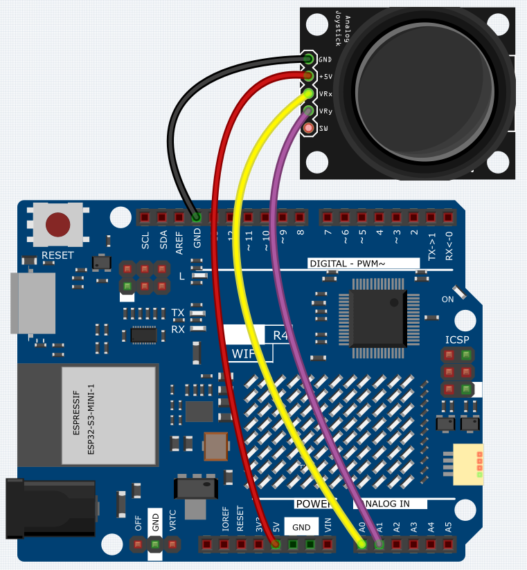

Joystick Module
Overview
A joystick is an input device consisting of a stick that pivots on a base and reports its angle or direction to the device it is controlling. Joysticks are often used to control video games and robots. A Joystick PS2 is used here.
Wiring
{kind=link}
Schematic Diagram
This module has two analog outputs (corresponding to X,Y biaxial offsets).
In this experiment, we use the Uno board to detect the moving direction of the Joystick knob.

Code
Note
You can open the file
10_Joystick_Module.inounder the path ofBasic-Starter-Kit-for-Arduino-Uno-R4-WiFi-main\Codedirectly.
Now, when you push the rocker, the coordinates of the X and Y axes displayed on the Serial Monitor will change accordingly.
Code Analysis
The code is use the serial monitor to print the value of the VRX and VRY pins of the joystick ps2.
void loop()
{
Serial.print("X: ");
Serial.print(analogRead(xPin), DEC); // print the value of VRX in DEC
Serial.print("|Y: ");
Serial.print(analogRead(yPin), DEC); // print the value of VRX in DEC
delay(50);
}